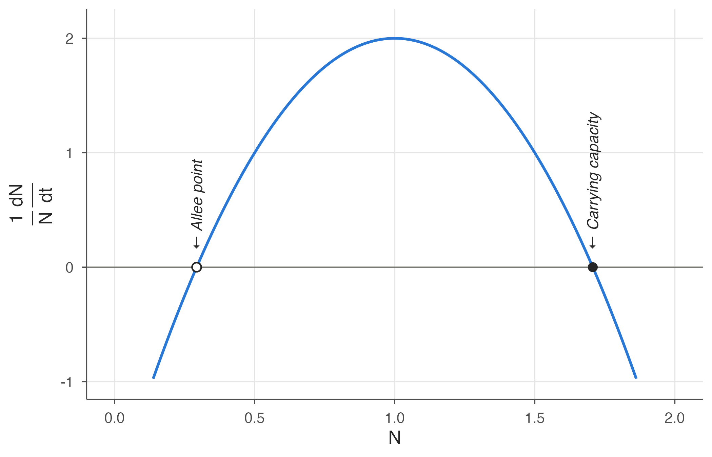

The rsn formulation of Equation 4.1 and Equation 8.1 incorporate the classical competition, predation, and logistic equations of ecology, plus mutualistic and orthologistic equations that are not part of the classical set. For this, the parameters can remain constant.
But they are not constant in all cases. Volterra (1928) considered parameters that vary through time, but more generally the parameters can be functions of population density as well. In this way the rsn formulation can be extended to cover not just the classical equations of ecology and related equations, but any equations of ecology whatever, as with Equation 4.3, proposed by Kolmogorov.
18.1 One-species examples
To see the basic idea, start with a single species. With variable parameters, population growth for a single species (Equation 4.1) can be written as follows, with the growth rate \(r\) and the density dependence term \(s\) depending on the population level \(N\) and optionally on the time \(t\).
Because anything can be embedded in the term \(r(N,t)\), or in the corresponding \(s(N,t)\), the equation is perfectly general and can cover any ecological situation for a single species modelled by a differential equation. A basic example, which you have already seen for human population growth, is where the parameters are approximately constant for long periods, but change at certain “bifurcation” events. The parameters for human population growth changed abruptly at the beginning of the modern era, resulting in overall population dynamics that were neither orthologistic nor logistic, but a piecewise combination of the two. In that case the two were blended by varying the parameters as follows.
This led to the population growth curve of Figure 6.3, which nicely modeled human population growth over the centuries.
Human population growth called for a piecewise blending of the parameters, because the parameters changed rather abruptly from one constant set to another. The parameters can also be blended continuously for parameters that change gradually.
For example, take an orthologistic equation, \(1/N\,dN/dt=-2+2N\), and a logistic equation, \(1/N\,dN/dt=4-2N\), and consider \(N\) as it ranges from 0 to 1. Have the orthologistic equation apply exactly as \(N\) approaches 0, and the logistic equation apply exactly when \(N\) reaches 1. Then let \(r\) change uniformly from \(-2\) to \(+4\) and \(s\) change uniformly from \(+2\) to \(-2\) as \(N\) goes from 0 to 1, as follows.
This kind of blending between orthologistic and logistic has simply added one more term to the population growth equation, an \(N^2\) term—one of the terms proposed by Hutchinson (Equation 4.2). The result is graphed in Figure 18.1.
Code
# Blended per-capita growth rate: r(N) + s(N) N with r = 6N - 2, s = -4N + 2blend <-function(N) (6* N -2) + (-4* N +2) * N # = -2 + 8N - 4N^2curve_df <-data.frame(N =seq(0.12, 1.88, length.out =400))curve_df$rate <-blend(curve_df$N)allee <-1-sqrt(2) /2# roots of -2 + 8N - 4N^2 = 0carrying <-1+sqrt(2) /2ggplot(curve_df, aes(N, rate)) +geom_hline(yintercept =0, colour = eco_cols[["grey"]], linewidth =0.4) +geom_line() +annotate("point", x = allee, y =0, shape =21, fill ="white",colour ="grey15", size =2.5, stroke =0.8) +annotate("point", x = carrying, y =0, shape =21, fill ="grey15",colour ="grey15", size =2.5) +annotate("text", x = allee, y =0.15, label ="← Allee point",angle =90, hjust =0, fontface ="italic") +annotate("text", x = carrying, y =0.15, label ="← Carrying capacity",angle =90, hjust =0, fontface ="italic") +scale_x_continuous(limits =c(0, 2), breaks =seq(0, 2, 0.5)) +scale_y_continuous(limits =c(-1, 2.1), breaks =-1:2) +labs(x =expression(N), y =expression(frac(1, N) ~frac(dN, dt)))

Figure 18.1: Orthologistic and logistic equations smoothly blended.
This smoothly blends the orthologistic, which has an Allee point but no carrying capacity, with the logistic, which has a carrying capacity with no Allee point, providing both in the blended curve of Figure 18.1. The curve has an Allee point at about \(N=0.3\) and a carrying capacity at about \(N=1.7\). Compare this with the piecewise blending depicted earlier in Figure 4.4.
18.2 Two-species blending
Blending two-species systems is a similar process, but has more options in the parameters. Equation 18.2 is an example with limited options that produced the phase spaces in Figures 10.3 through 10.5.
Changing the parameters uniformly from a \(b\) value when the corresponding \(N\) value is 0 to an \(a+b\) value when the corresponding \(N\) value is 1 is analogous to the blending that produced Figure 4.4. The parameters would vary as follows, using four distinct \(a\) values (\(a_1\), \(a_2\), \(a_{1,2}\), \(a_{2,1}\)), plus four distinct \(b\) values with matching subscripts (\(b_1\), \(b_2\), \(b_{1,2}\), \(b_{2,1}\)).
Substituting the above into Equation 18.2 and collecting terms gives an equation having all the rsn terms present, but now with a cross-product in terms of \(N_1N_2\) added at the end:
The methods we have described in this chapter provide an organized way of designing higher-order models of ecological interactions. Characteristics of the individual models purely in rsn form can be mixed and matched as needed to produce the higher-order model, then the resulting parameters can be fit to observations or modelling needs.
For example, the bistable phase space in Figures 10.3 through 10.5, with an unstable Allee point combined with a stable carrying capacity, was easy to achieve by combining sub-models, each with one of those characteristics. The result was simply an rsn system with an \(N_1N_2\) cross-product term added, but how easy would it have been to conceive that term a priori and perceive its sufficiency?
Moreover, a blended model in the form of Equation 18.2 can be visualized in terms of (1) the intrinsic growth rate of each species, (2) how each species affects the other, (3) how each species affects itself, and (4) how those effects change with population densities. In a way, any higher-order system constructed in this way can be viewed as an rsn system at every point, yet as a higher-order system overall.
In summary, we cautiously recommend this method of creating and organizing ecological models, and are eager to hear of successes and failures you might have with it.
The characters acting in this book—the equations of population growth, the parameters and their relationships, the graphs and phase planes—live in variations and disguises within an enormous variety of actual ecological applications, detailed in thousands of scientific papers you will be able to sample as your journey continues. We hope you have enjoyed this introductory book and that it has been useful. We welcome your comments on any aspects at all. An ebook is never finished but can constantly be improved.